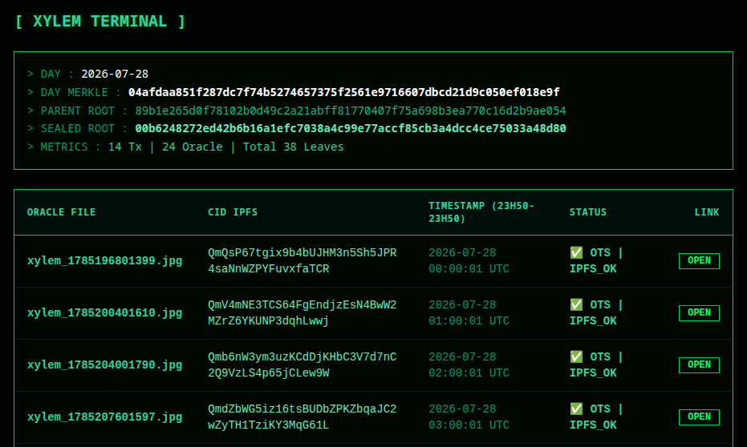
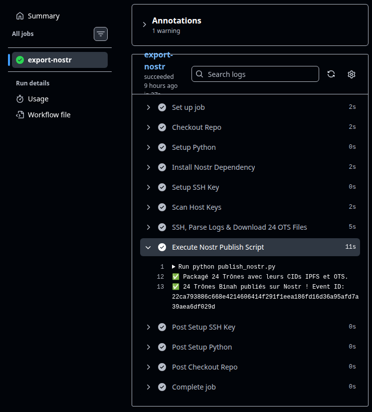
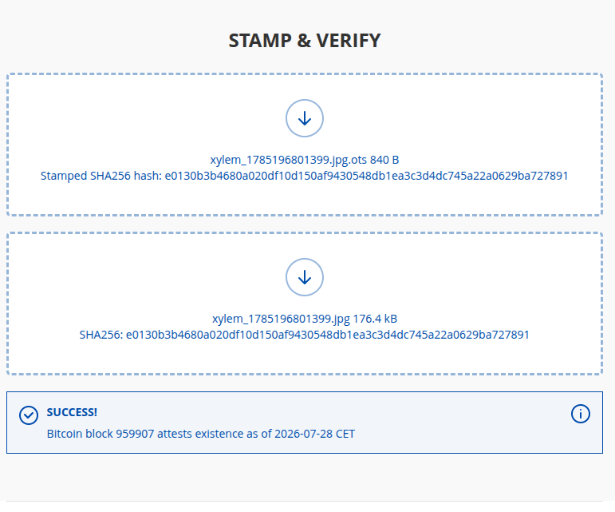
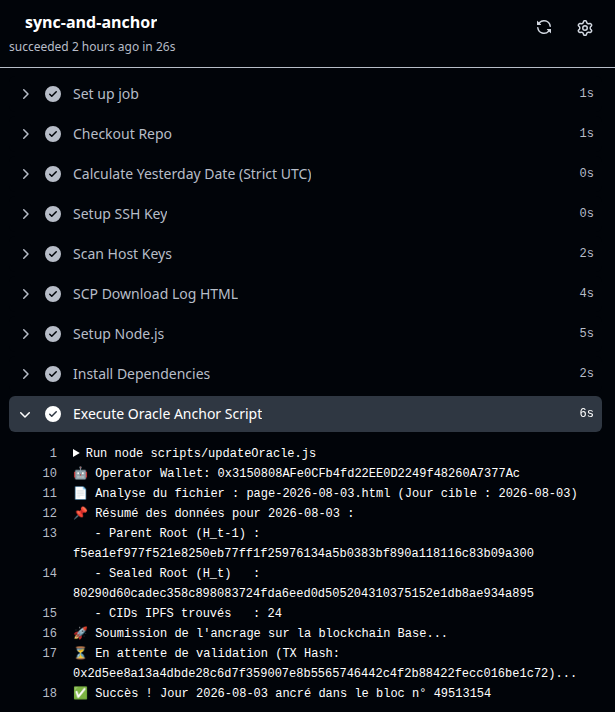

Veuillez choisir le composant du registre à auditer :
1. Rendez-vous sur la page du jour que vous souhaitez auditer sur le journal Xylem Log :
> Chercher la page sur l'index
> CAPTURE 01:journal OTS vers Nostr2. Ouvrez le lien de l'image correspondante à l'heure désirée sur le réseau IPFS (accessible directement depuis le lien "open" de la page HTML).
3. Enregistrez l'image localement sur votre machine sans la modifier.(accedez au depot miroir si l'acces IPFS est lent)
4. Repérez et copiez-collez dans votre presse papier le nom du fichier OTS correspondant (Open Time Stamped) que vous désirez vérifier.
Allez sur la page github Action et recuperez le numero de parution Nostr "Event ID" contenant les 24 fichiers OTS cryptés:
> CHERCHER JOUR
> CAPTURE 02: Routine Github Action "Execute Nostr Publish Script" Event IDSaisissez ou collez l'Event ID Nostr (hex 64 caractères) pour récupérer directement l'événement et son JSON :
Collez ici le texte brut de la publication Nostr pour extraire directement la preuve .ots binaire :
Consulter directement l'événement source sur un explorateur de relais Nostr (https://nostr.at/+Event_ID):
> Inspecter la note Nostr (Nostr.band)Rendez-vous sur l'outil de vérification indépendant OpenTimestamps :
> Accéder au vérificateur OpenTimestamps.orgGlissez-déposez conjointement l'image (.jpg) et sa preuve horodatée (.ots) pour valider l'ancrage temporel exact dans la blockchain Bitcoin.

> CAPTURE 03: Vue de la page interface de OpenTimeStampedComment vérifier ?
1. Repérez le jour souhaité sur le Xylem Log :
> Consulter le Daily Log and Update Xylem Oracle2. Accédez à la section Action / Workflow du registre pour auditer l'exécution de l'ancrage quotidien (du jour precedent) :

> CAPTURE 04: Vue de la page GitHub qui execute le smart contrat sur Base L2 Ethereum quotidiennement3. Vérifiez directement la transaction ainsi que le contrat intelligent sur l'explorateur de blocs de la blockchain Base (Ethereum L2) :
> Explorer sur le réseau Base (Basescan)